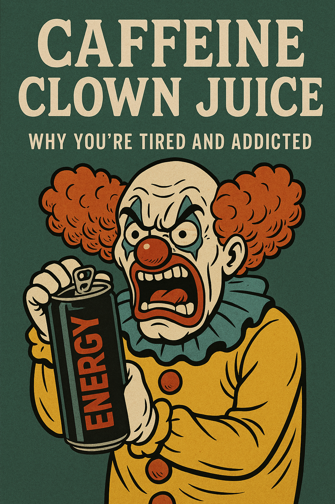

Flügel sind für Vögel
Warum du keine Dose brauchst, um wach zu sein
Energy-Drinks schmecken schon irgendwie geil! Aber lass uns mal ehrlich sein: Du trinkst sie nicht, wegen des guten Geschmacks. Du trinkst sie, weil du glaubst, dass sie dir etwas geben. Du denkst, sie geben dir Energie. Aber das ist Bullshit und sobald du das erkennst, wird es leicht, auszusteigen. Ohne Entzugserscheinungen, ohne Kampf, ohne Willenskraft.

Energie aus der Dose? Trust me bro!
Energy-Drinks sind reines Marketing. Verkauft wird eine Illusion: Öffne die Dose, spür den Kick, und LETS GOOO! Auf zu neuen Höchstleistungen. Aber das ist kein echter Energieschub. Es ist dein Nervensystem, das einen Tritt in den Arsch bekommt. Du leihst dir Energie von später und das mit hohen Zinsen.
Erst kommt der Push, dann der Crash. Die erste Dose war nice, aber was jetzt? Noch eine Dose, gönn dir! Aber du bist nicht wach. Du bist auf einer Achterbahn, die du nicht mehr steuerst. Der einzige Grund, warum du draufbleibst, ist die Angst davor, wie es ohne wäre.
Das ist keine Energie. Das ist Abhängigkeit.
Du brauchst das nicht
Die gute Nachricht: Dein Körper kann echte Energie produzieren. Und zwar von ganz allein. Aus Schlaf, Nahrung, Bewegung, Sonnenlicht, Wasser. Was in der Dose ist, ist kein Booster. Es ist ein Tarnumhang. Du bist müde? Der Drink versteckt das Gefühl, statt das Problem zu lösen.
Das ist, als würdest du das Ölwarnlicht im Auto abkleben, statt nachzufüllen.
Du bist nicht mit einem Energy-Drink in der Hand geboren. Du hattest Energie. Du bist gelaufen, hast gespielt, warst lebendig. Diese Energie ist noch da. Du musst nur aufhören, sie zu blockieren.
Was Energy-Drinks wirklich mit dir machen
Wenn du erstmal durch die Werbung durchblickst, erkennst du, was diese Drinks dir antun:
- Koffein-Abhängigkeit: Eine Dose hat oft das Doppelte oder Dreifache einer Tasse Kaffee. Toleranz steigt schnell. Du brauchst mehr für denselben Effekt. Willkommen im Teufelskreis.
- Schlafprobleme: Auch wenn du irgendwann einschläfst – dein Schlaf ist flach. Schlechter Schlaf macht dich müder. Was machst du? Nächste Dose.
- Herz-Kreislauf-Stress: Koffein, Taurin, Guarana – ein Cocktail für erhöhten Puls und Blutdruck. Nicht umsonst nennt man das Zeug in Notaufnahmen „Flüssigen Herzinfarkt".
- Stimmungsschwankungen: Erst euphorisch, dann gereizt oder depressiv. Deine Dopamin-Achse wird zerschossen.
- Gewicht und Stoffwechsel: Zucker oder künstliche Süßstoffe ruinieren deine Darmflora und deinen Blutzuckerspiegel.
Und das Beste? Langfristig bringen sie dir gar nichts. Studien zeigen: Wer regelmäßig Energy-Drinks konsumiert, hat keine echten Leistungssteigerungen. Du vermeidest nur den Entzug.
Rechne kurz nach
Falls dich die Gesundheit nicht überzeugt, vielleicht dein Konto: Zwei Dosen am Tag, je etwa anderthalb Euro sind über tausend Euro im Jahr. Tausend Euro dafür, dass du schlechter schläfst, nervöser bist und am Nachmittag in ein Loch fällst. Du bezahlst nicht für Energie. Du bezahlst dafür, dass das Problem unsichtbar bleibt, das die Dose selbst verursacht.
Stell die Dosen einer Woche nebeneinander auf den Tisch und schau sie dir an. Das ist kein Lifestyle. Das ist ein Abo, das du nie bewusst abgeschlossen hast.
Was Abhängigkeit wirklich ist
Energy-Drink-Sucht hat weniger mit Chemie zu tun als mit Psychologie. Es ist der Glaube: „Ohne das Zeug schaff ich den Tag nicht."
Das ist der wahre Haken. Die Stimme in deinem Kopf, die sagt: „Nur noch eine für heute." Oder: „Ich hab heute viel zu tun, das geht nicht ohne." Das bist nicht du. Das ist die Sucht, die so tut, als wärst du das.
Aber hier kommt der entscheidende Punkt: Du musst nicht kämpfen. Du musst nichts opfern. Du musst nur erkennen, dass du nichts bekommst. Dass du nur verlierst. Wenn du das siehst, fällt das Loslassen leicht. Willst du ewig Konsument sein oder irgendwann mal dein eigenes Ding machen?
Das Ritual erkennen
Für viele ist es nicht mal die Wirkung. Es ist das Ritual: Die Dose öffnen. Der Geschmack. Das Kalt-auf-Warm-Gefühl im Mund. Der kurze Moment, bevor die Arbeit beginnt. Ein Anker im Alltag. Fast wie eine Zigarette für den Bildschirmarbeiter.
Aber hier liegt der Trick: Das kannst du ersetzen.
Frag dich: Was suche ich wirklich? Konzentration? Komfort? Pause? Dann schaff dir einen neuen Anker. Kaltes Wasser mit Zitrone. Musik. Kurz aufstehen und strecken. Kaugummi. Alles ist besser als ein teurer, nervenzerrender Zuckerbomber.
Wenn du erstmal vom Koffein los bist, vermisst du die Dose nicht. Du vermisst die Routine. Und die kannst du neu bauen. Ohne Chemie, ohne Abhängigkeit.
Die ersten Tage – und warum sie nichts beweisen
Ja, die ersten zwei, drei Tage können sich zäh anfühlen. Vielleicht bist du etwas müde, vielleicht brummt der Kopf. Aber versteh, was da passiert: Das ist nicht „dein Körper braucht die Dose". Das ist dein Körper, der gerade aufräumt. Das Gefühl ist der Beweis dafür, wie sehr das Zeug dich im Griff hatte – nicht dafür, dass du es brauchst.
Und genau hier scheitern die meisten, die mit Willenskraft aufhören: Sie deuten die Müdigkeit als „Es geht nicht ohne". Wer verstanden hat, dass die Dose nichts gibt, deutet dieselbe Müdigkeit richtig: als letztes Aufbäumen einer Gewohnheit, die schon verloren hat. Trink Wasser, geh früh schlafen, geh raus ans Licht. Nach wenigen Tagen ist der Spuk vorbei – und dann kommt etwas, das du lange nicht hattest: ein Vormittag mit gleichmäßiger, ruhiger Energie.
Zurück zur echten Energie
Was passiert, wenn du aufhörst?
Dein Körper reguliert sich. Dein Schlaf wird tiefer. Deine Konzentration kehrt zurück. Deine Stimmung wird stabiler. Du wirst klar.
Keine Abstürze mehr. Kein Zittern. Kein Planen nach dem nächsten Schub. Einfach du, wach und echt.
Und das ist mehr als physisch. Es ist psychisch. Du vertraust dir wieder. Du brauchst nichts Äußeres mehr, um „funktionieren" zu können. Du hast die Kontrolle zurück.
Der einfache Ausstieg
Wie hört man auf?
Nicht durch Willenskraft. Nicht durch Reduktion. Auch nicht durch „jetzt nur noch Kaffee".
Du hörst auf, indem du verstehst, dass du nichts aufgibst. Du siehst klar: Das bringt mir nichts. Das macht mich müde, nicht wach. Das ist kein Genuss, das ist ein Trick.
Jemand macht auf deine Kosten fett Kohle. Deine Gesundheit geht den Bach runter und du zahlst auch noch dafür. Wieso? Weil Red Bull, Monster, Gönrgy und co sehr viel Geld investiert haben, um dir ein Versprechen zu verkaufen, das sie nicht halten. Du hast es ihnen abgekauft, im mehrfachen Sinne des Wortes.
Und wenn du das einmal erkennst, brauchst du keine Motivation. Nur einen Entschluss:
Ich bin raus.
Fazit: Freiheit statt Dose
Energy-Drinks wirken harmlos. Aber sie nehmen dir Energie, Geld, Schlaf, Nerven. Und geben dir nichts zurück.
Frei sein bedeutet: Du brauchst nichts, um du selbst zu sein. Kein Ritual aus der Dose. Kein gefakter Fokus. Keine schleichende Abhängigkeit.
Deine Energie ist schon da. Wach ist kein Zustand, den du kaufen musst. Es ist dein Normalzustand – wenn du ihn lässt.
Also: Kein Kampf. Kein Verzicht. Nur die Entscheidung, aus der Nummer auszusteigen.
Denn mal ehrlich:
Flügel sind für Vögel.